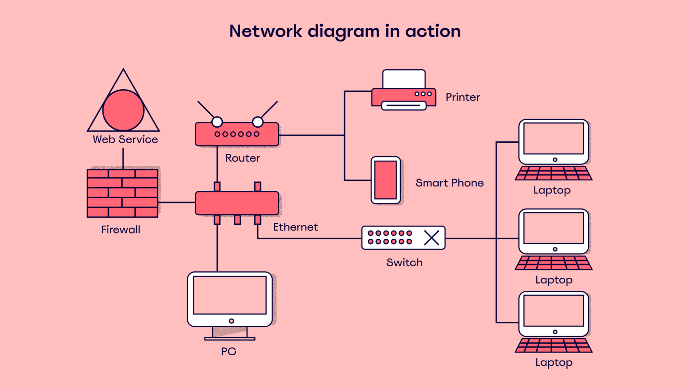

Computer Networks
Computer networks allow devices to communicate and share data efficiently.
Basic Components of a Network
- Routers - Direct network traffic between devices.
- Switches - Connect devices within a local network.
- Servers - Store and provide data to clients.
- Protocols - Rules that devices follow to communicate (ex: HTTP/HTTPS).
Network Topologies
Networks can be arranged in different structures, such as:
- Star Topology
- Mesh Topology
- Bus Topology
Example Network Diagram
Here’s what a network diagram looks like:
Understanding how networks work is essential for setting up websites, hosting servers, and managing online communication.